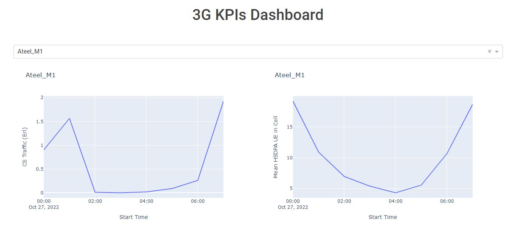
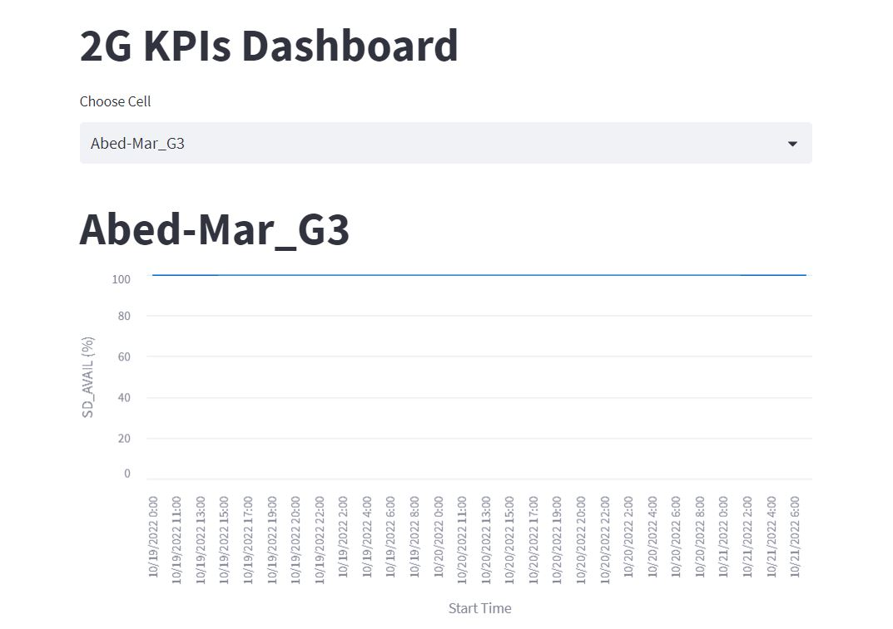
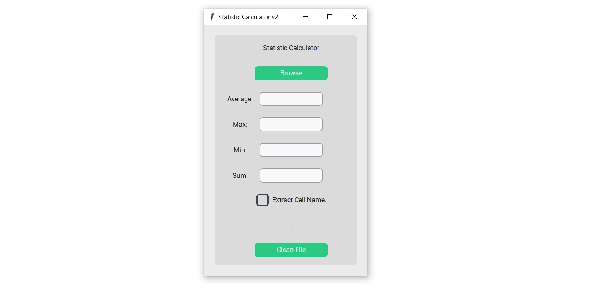
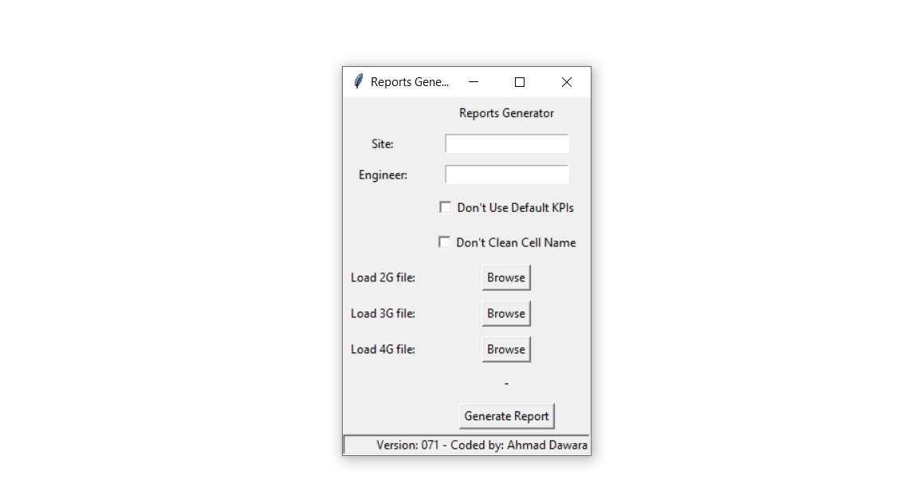
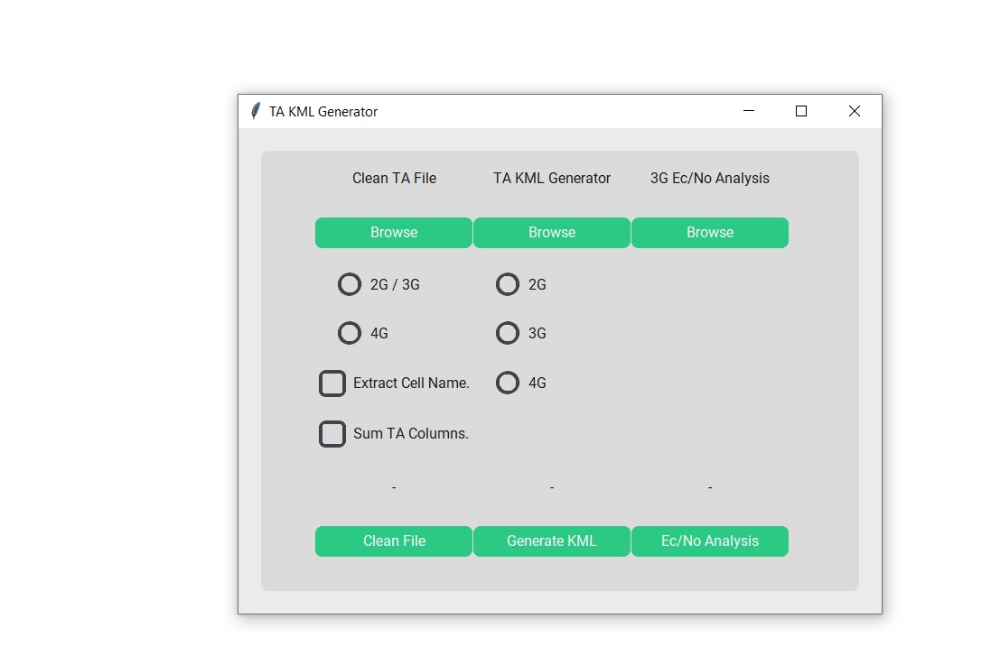
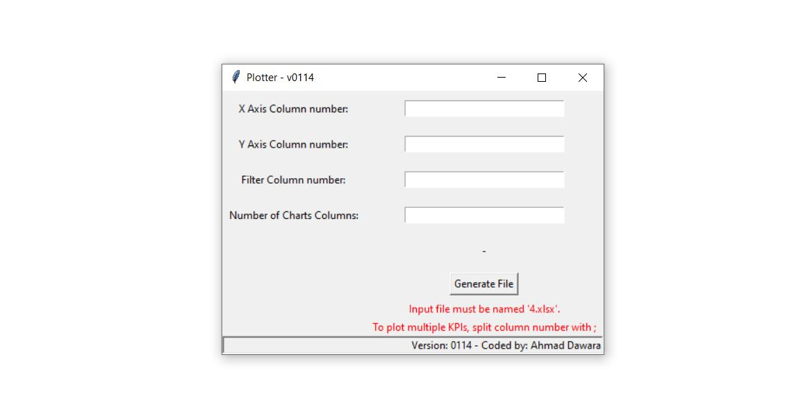

With experience in Python programming and SQL databases, I specialize in data cleaning and preprocessing with Pandas in Python. I have worked with real-world data and possess strong skills in data visualization with Matplotlib in Python. Additionally, I have built dashboards using Streamlit and Dash modules in Python.

A clear and simple dashboard to show many KPIs charts, build using Python, Pandas and Dash, the dashboard can read the data from excel file or database and preprocess the data and display the charts, tested on real world data.

A clear and simple dashboard to show many KPIs charts, build using Python, Pandas and Streamlit, the dashboard can read the data from excel file or database and preprocess the data and display the charts, tested on real world data.

A clear and simple desktop application to quikly generate statistics (Mean, Max, Min, Sum) and summerize the data in one click, build using Python, Pandas and Tkinter, the application can read the data from excel file or database and preprocess the data and output the statistics to an Excel file,tested on real world data.

A clear and simple desktop application to quikly generate PowerPoint reports in one click, build using Python, PPTX, Pandas and Tkinter, the application can read the data from excel file or database and preprocess the data and output the statistics to PowerPoint file,tested on real world data.

A desktop application to quikly generate Google Earth files in one click, build using Python, simplekml, Pandas, Numpy and Tkinter, the application can read the data from excel file or database and preprocess the data and output the data to a Google Earth (KML) file, the user can see the data represent on geographic areas, tested on real world data.

A clear and simple desktop application to quikly generate Excel reports in one click, build using Python, xlsxwriter, Pandas and Tkinter, the application can read the data from excel file or database and preprocess the data and output the report to Excel file,tested on real world data.